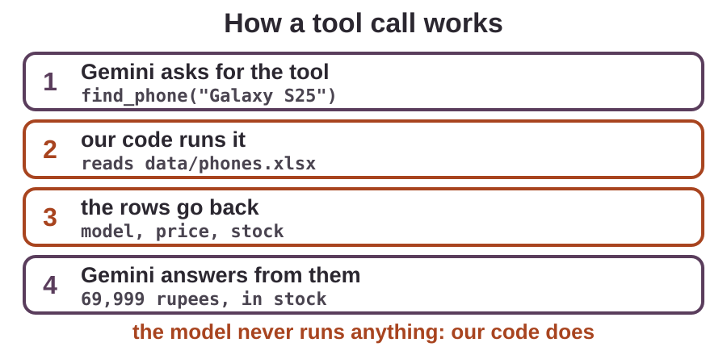
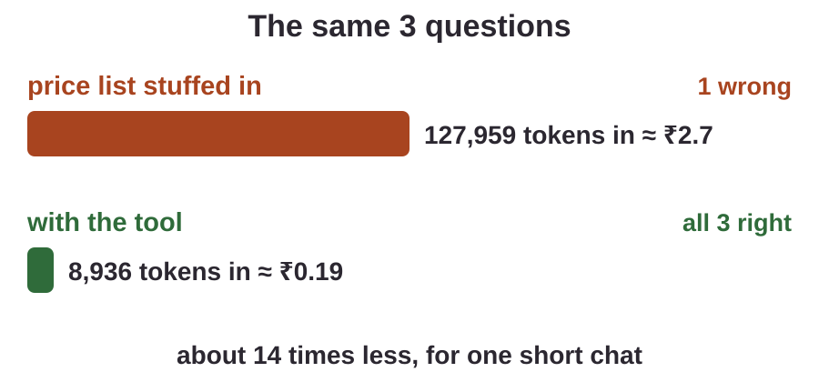
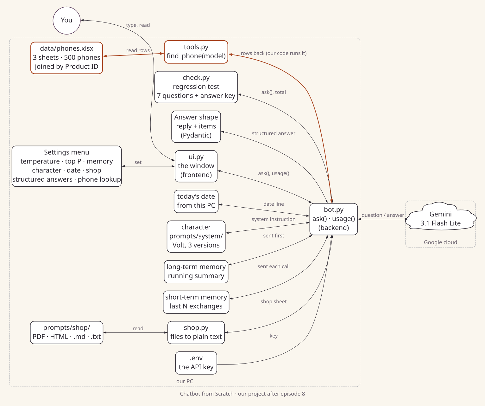
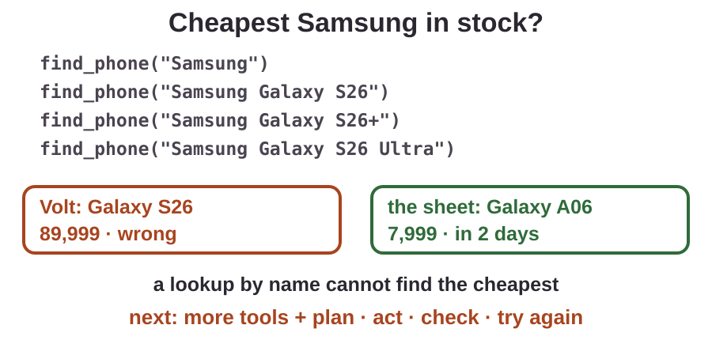

Prefer to watch? This chapter goes with Episode 8 (8:08). Open it on YouTube.
.venv. Antigravity, signed in: install Antigravity on Windows. Your own Gemini key in .env. And the price list workbook, data/phones.xlsx, from this chapter's code..env with GEMINI_API_KEY; the README shows the setup.What stuffing costs
Chapter 7 ended with a bigger price list: 500 phones in prompts/shop/phones.txt. Context stuffing sends every shop file with every question, so our shop files alone came to 42,285 tokens.
Before changing anything, measure it. Start the window and ask three phone questions in one chat:
| Question | Volt's answer | Tokens in |
|---|---|---|
| How much is the Galaxy S25 with 12GB / 256GB? | 69,999 rupees: right | 42,601 |
| Is the Galaxy S25 with 512GB in stock? | "Yes, in stock": wrong, the price list says out of stock until 1 December | 42,653 |
| Do you have the Pixel 9? | Not sure, will check with the shop | 42,705 |
| One short chat | 127,959 (about 128,000) |
The token counter in the window shows 128,230: that adds the 271 tokens of Volt's three answers. In money:
- One chat: 127,959 tokens in × $0.25 per million = about $0.032, about ₹2.7.
- A thousand chats a day: about ₹2,700 a day, though each answer needed only one row of the price list.
Price: Gemini 3.1 Flash Lite input tokens, as listed in Google AI Studio on 25 Nov 2026; ₹85 to the dollar. Prices change: check the current one before you plan.
Function calling in AI Studio
Google AI Studio shows the idea first. In Run settings, turn on Function calling and click Edit. In the Code Editor, describe one function:
[
{
"name": "find_phone",
"description": "Look up a phone's price and stock by its model name.",
"parameters": {
"type": "object",
"properties": {
"model": { "type": "string", "description": "The phone model, for example Galaxy S25" }
},
"required": ["model"]
}
}
]Ask the same question. Gemini does not answer: it returns a call, find_phone with {"model": "Galaxy S25"}, and waits for a function response. Letting the model ask for your own function like this has a name: function calling, and the function is called a tool.
Here you play your code's part by hand: type two rows from the price list as the response (the 12GB / 256GB at 69,999, in stock; the 12GB / 512GB at 77,999, out of stock). Now Gemini answers: 69,999 rupees, in stock.
A tool call in 4 steps
- Gemini asks for the tool, with its input:
find_phone("Galaxy S25"). - Our code runs it, on our own file.
- The rows go back to Gemini.
- Gemini answers from them.
The model never runs anything. Our code does.

The price list, as a workbook
Delete prompts/shop/phones.txt, so the shop files are small again. The price list moves to a workbook, data/phones.xlsx, with three sheets linked by a Product ID:
- Product Information: brand, model, variant, segment;
- Product Pricing: MRP, selling price, discount, offer;
- Product Availability: stock, status, delivery days, restock date.
Real model names, invented prices: it is a practice shop.
The tool prompt
Make a new file, prompts/08-tool.txt. One line matters most: our own code runs the call, not the SDK, so you can see every step.
Task : Give Volt its first tool, find_phone: Volt asks for it, and our own code runs it on the phone workbook and sends the result back
Context :
- Use the virtual environment .venv in this folder. Don't create a new one.
- Today the 500 phones are not in the shop files any more. They live in data/phones.xlsx, in 3 sheets joined by Product ID: Product Information, Product Pricing, Product Availability.
- Write a new file, tools.py, with one function: find_phone(model). It finds every row whose model name contains the words asked, joins the 3 sheets by Product ID, and returns a short list: model, variant, selling price in rupees, status, delivery days. At most 10 rows. Use openpyxl and add it to requirements.txt.
- In bot.py, tell Gemini about find_phone as a tool, with a one-line description: look up a phone's price and stock by its model name.
- Don't let the SDK run the tool by itself. When Gemini asks for find_phone, our code runs it, sends the rows back as the function response, and asks Gemini again for the answer.
- When find_phone returns no rows, Volt says we don't sell that phone. Volt never invents a phone price.
- Keep structured answers working: the reply plus items with plain-number prices.
- In the window, under a reply that used the tool, add one grey line like the token line, for example: Tool: find_phone("Galaxy S25") -> 3 rows.
- Add Settings > Phone lookup: a tick I can select or unselect. It starts selected. Unselected, Volt has no tool.
- Count the tool's tokens in the tokens in, as before.
- Keep the date, the shop sheet, the character, the memory, the settings and everything else as it is.
- Don't write test files; I will try it myself.
Folder arch :
- ui.py : the window (frontend)
- bot.py : the chatbot (backend), now with a tool
- tools.py : find_phone, reads data/phones.xlsx
- shop.py : reads the shop files into plain text
- check.py : our regression test
- data/phones.xlsx : the 500 phones, 3 sheets
- prompts/ : our prompts
- prompts/shop/ : our shop files
"Don't let the SDK run the tool by itself" keeps the 4 steps in our code, where we can see them.
Review and implement prompts/08-tool.txt
When it is done, the agent has changed 4 files: the new tools.py, bot.py, ui.py and requirements.txt. It also ran our regression test to check its own work. Click Accept all.
A note on the model. A new update for Antigravity became available while we recorded, so we moved the agent to the Gemini 4 Hydrogen model, with thinking effort chosen as Medium. Pick the model your Antigravity offers.
What the agent wrote
tools.py:find_phone(model)takes the words of the model name, reads the three sheets, joins them by Product ID, and returns at most 10 short rows: model, variant, selling price, status, delivery days.bot.py: the tool is described to Gemini, with its one input, the model. When Gemini answers with a call, our own code runsfind_phoneand sends the rows back withPart.from_function_response, then asks Gemini again.ui.py: a grey line under each reply that used the tool, and a Settings › Phone lookup tick.
The tool, live
python ui.py
The status line now ends with Shop: 4 files, 329 tokens · Phone lookup: on. Ask the same three questions:
| Question | Volt's answer | The tool line | Tokens in |
|---|---|---|---|
| Galaxy S25, 12GB / 256GB | 69,999 rupees, in stock | find_phone("Galaxy S25 with 12GB / 256GB") -> 0 rows, then find_phone("Galaxy S25") -> 10 rows | 3,043 |
| The 512GB one in stock? | Out of stock: right | 0 rows, then 10 rows | 3,199 |
| Pixel 9? | We do not sell it | find_phone("Pixel 9") -> 0 rows | 2,694 |
The two calls are honest: Volt first asks for the whole question as a name, finds nothing, and tries again with Galaxy S25. With Phone lookup off, in a new chat, Volt has no tool and can only say it will check with the shop.
Before and after
| The same 3 questions | Tokens in | About | Answers |
|---|---|---|---|
| Price list stuffed in | 127,959 (≈128,000) | ₹2.7 a chat; ₹2,700 per 1,000 chats a day | 1 wrong |
| With the tool | 8,936 | ₹0.19 a chat; ₹190 per 1,000 chats a day | all 3 right |
About 14 times less, and right. Input tokens at $0.25 per million (Gemini 3.1 Flash Lite, AI Studio, 25 Nov 2026), ₹85 to the dollar.

The regression test grows
Add two lines to the answer key at the top of check.py, by hand:
("How much is the Galaxy S25 with 12GB / 256GB?", 69999),
("How much is the Pixel 9?", 0),python check.py
The new lines get their answers through the tool: 7 of 7 passed.
Our project so far
New in this chapter, in orange below: tools.py with find_phone, and the workbook data/phones.xlsx. Our own code runs each call.

Quick reference
Every command and menu from this chapter. The prompt is above.
| Command or menu | What it does | Use it when |
|---|---|---|
Review and implement prompts/08-tool.txt | Adds find_phone, the tool and the tool line | After writing the prompt |
python ui.py | Opens the window | To ask about phones |
| Settings › Phone lookup | Gives Volt the tool, or takes it away | To compare with and without |
python check.py | Runs the regression test | After every change |
The takeaway
- Context stuffing pays for the whole price list on every question, and a big context can still give a wrong answer.
- With function calling the model only asks for a tool; your own code runs it and sends back just the rows needed.
- Fewer tokens, and the answers come from your data: about 14 times cheaper here, and all three right.
Count the tokens
The goal: see the cost of a tool against stuffing, in your own window.
The steps: give our prompt to the agent in your own copy of the project. Ask about three phones from data/phones.xlsx, and read the grey line under each answer. Then untick Settings › Phone lookup, start a new chat, and ask once more.
Guess first: how many tokens in, with the tool and without?
One question for you: if your own bot got one tool, what should it look up?
Next: our first agent
Try a harder question: Which is the cheapest Samsung phone in stock, and when can it be delivered? find_phone searches only by model name, so Volt has to guess names. After four guesses it settles on the Galaxy S26 at 89,999 rupees. The price list says otherwise: the Galaxy A06 (2GB / 32GB) costs 7,999 rupees, is in stock and arrives in 2 days.
Why it fails: "cheapest" is not a model name, so no single lookup by name can answer it. In Chapter 9, Volt gets more tools and a loop that plans, uses a tool, checks the result and tries again: our first agent.

References
Where each number on this page comes from. Everything was also checked in our own recording on 25 Nov 2026.
- Google · Function calling with the Gemini API Declaring a function, the model's function call, and sending the function response back. https://ai.google.dev/gemini-api/docs/function-calling
- Google · Gemini API pricing The input price per million tokens (we used the price AI Studio listed on 25 Nov 2026). https://ai.google.dev/gemini-api/docs/pricing
- Google · Google AI Studio The Function calling switch, its Code Editor and the function response box. https://aistudio.google.com
- openpyxl · Documentation Reading the sheets of an Excel workbook in Python. https://openpyxl.readthedocs.io/
- Learn AI by Building · chatbot-from-scratch on GitHub This chapter's finished code, the prompt and the workbook. https://github.com/Aditya-402/chatbot-from-scratch
- My own recording · 25 Nov 2026, Windows 11 Every answer, total and token count on this page is from those takes, on Gemini 3.1 Flash Lite.
New chapters and episodes come out every week. Follow along on YouTube or the WhatsApp channel. Questions? Ask under the video on YouTube; I read every comment.